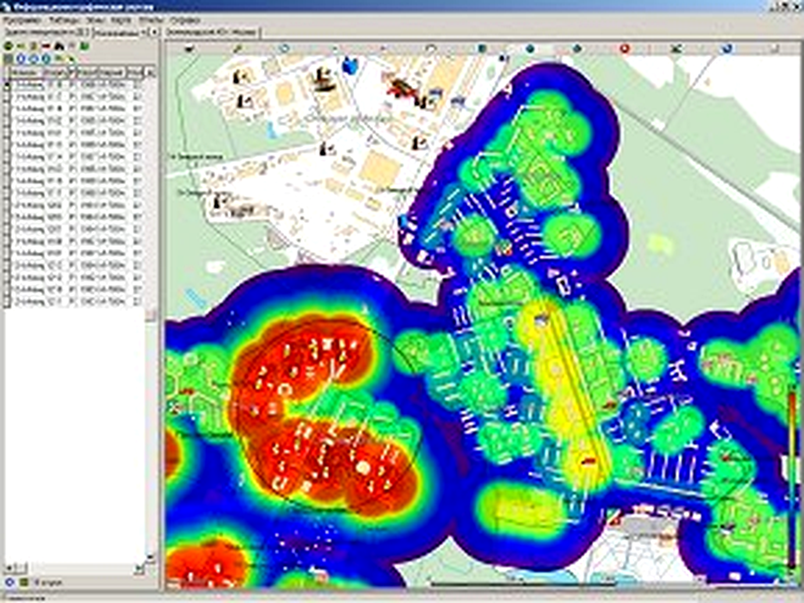

Аналитические возможности
В муниципальную ГИС встроены средства, позволяющие готовить и выполнять параметрические запросы к БД с отображением результатов на картографической основе.
При выполнении параметрических запросов пользователь имеет возможность задавать параметры непосредственно перед выполнением стандартных запросов.
Получение результатов анализа в виде стандартного документа MS Excel
Построение запросов для анализа неравномерно территориально распределённых данных
Формирование растрового изображения «синтезированной заливки» — тепловые карты
Пользователи могут перемещать и масштабировать изображение вместе с картографической основой
При изменении параметров создаётся новое изображение, отражающее актуальный анализ

Вопрос специалисту ЭРМА СОФТ
Расскажите о задаче — подготовим демонстрацию и предложение за 3 рабочих дня